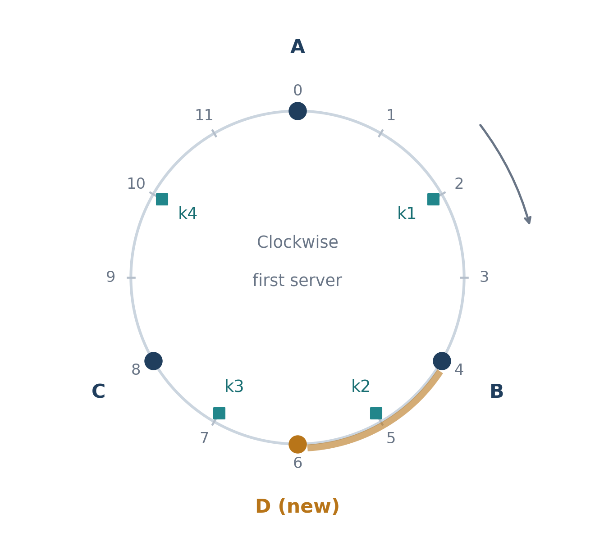

把数据分给多台服务器时，可以让新增机器只接走一部分数据，而让其余数据保持原来的归属。这是本期要抓住的一件事：扩容时，怎样避免大范围重新分配？
主文约4分钟。这里的“哈希”是把商品编号稳定地换成一个数字：输入不变，数字就不变。我们用它决定商品记录该去哪台机器；这与用小表判断商品是否存在，是两个不同的问题。
直觉办法：按机器数量取余
假设三台机器编号为0、1、2。拿商品的哈希值除以3，把余数当机器编号，就能分配数据。现在加一台机器，改成除以4：哈希值5原来余2，现在余1；哈希值7原来余1，现在余3。连两台旧机器之间也会交换数据。
机器数量进入了每条记录的分配公式。改变这个数，许多记录的归属都会改变。对缓存，这可能意味着重新取回数据；对持久存储，则可能需要真正搬数据。我们希望新机器承担工作，同时尽量保住已经安排好的位置。
让机器插入一圈固定的位置
把固定的数字范围首尾接起来，像钟面一样围成一圈。商品编号和机器名字都可以变成环上的位置；查一件商品时，从它的位置顺时针走，遇到的第一台机器负责它。这圈数字的范围不随机器数量改变。
下面是便于手算的教学图：位置只有0到11，A在0、B在4、C在8。绿色方块是四条记录的位置，不是机器；D是稍后加进来的新机器。真实系统的位置范围远大于这个示例，也要处理位置碰撞。


| 记录的位置 | 加D之前 | D加入位置6之后 |
|---|---|---|
| k1：2 | B | B |
| k2：5 | C | D |
| k3：7 | C | C |
| k4：10 | A（绕回0） | A（绕回0） |
只看k2：从5出发，原来先遇到8处的C；D插在6以后，先遇到D。k3在7，已经越过D，仍归C。改变的只有从B之后到D为止的区间的归属；其他区间的第一台机器没有变。
这类在机器集合变化时尽量少改归属的映射，称为一致性哈希。这里的“一致性”说的是映射变化的性质，不是在保证数据库副本随时相同。这个小样本只搬了四条中的一条；不要把它当成每次扩容都恰好搬四分之一的定律。
少搬数据之后，还要让负担更均匀
每台机器只占一个点，点之间的空隙可能很不均匀。有的机器接到很长一段，有的只接到很短一段。常用办法是让同一台机器在环上拥有多个位置，把几段分散的小区间交给它；这些位置通常叫“虚拟节点”。它们仍指向同一台真实机器，不是额外复制出来的机器。
可以继续沿刚才的例子想：如果D只接一个很短区间，它承担的记录可能太少；让D在不同地方接几小段，更容易分摊记录，也能把迁移工作分散到几台旧机器。代价是要保存和维护更多位置。记录数量更均衡，也不保证请求量均衡：一个特别热门的商品仍可能压住它所在的机器。
历史转折：问题没变，愿意付的成本变了
1997年的原论文面向网络缓存：机器会加入、退出，客户端知道的机器名单也可能不同。它提出了映射应随成员变化而平稳改变的目标，而且当时的构造已经让每台缓存机器对应多个位置。不能把“多个位置”的想法算成后来的Dynamo才发明。
2007年的Dynamo把这类思路用于生产存储，明确引用了早期工作，并采用顺时针环与多位置分配，处理机器能力不同和迁移工作分摊。工程中的转折是：不仅要知道一条记录归谁，还要考虑整批数据怎样移交。它后来也调整了分区策略，初版随机落点并非最终答案。
2014年的Jump换了一个取舍：如果把数据分成连续编号的组，并只从编号末尾增减组数，就可以按键直接算出归属，不必保存整张环表。它省下映射所需的内存，但不能直接照搬到“任意一台机器退出”的场景。它是同一分配问题的一条分支，不是Dynamo的全面替代。
今天重新选择时，先问三件事：成员能否任意退出？需要按机器容量分配吗？真正昂贵的是搬数据、保存路由表，还是少数热门记录？这些条件比“哪个算法年代更新”更能决定方案。
停一下：自己沿环走一次
仍用图中的位置。D已经加入以后，若C退出，而其他位置不变，k3会交给谁？先从7顺时针找下一台机器。
查看答案
交给A。C在8的位置消失后，从7顺时针继续走，绕过11后首先遇到0处的A。k2仍先遇到6处的D，所以不用跟着搬。这里只讨论单一负责机器的归属；副本、故障期间的读写处理并没有包含在图里。
可选深入：三个转折各自留下了什么
原始目标与图的边界。 Karger等人的§4把成员变化、负载和不同客户端视图分开刻画。其具体构造是在区间上找最近位置，并非本图的顺时针后继规则。用Dynamo式小环解释少量迁移，不能因此把两种构造写成逐步相同的算法。
生产分区不是只调位置数量。 Dynamo §6.2还讨论先切等大小分区、再分给机器；这把分区与机器放置分开，需另行管理分区表和移交。
Jump省掉的是什么。 给定键和桶数n，它确定性地重现由该键驱动的伪随机过程，跳过那些归属不变化的桶数。输出在0到n−1之间；理想模型中，从n桶增至n＋1桶时，约1/(n＋1)的键转到新桶，其余保持原桶。工作内存是常数级，计算步数的期望随log n增长。若删掉中间某个桶，须另设稳定逻辑桶/替换或映射层，不能靠把后面机器重编号就声称保持原来的少迁移性质。
有界负载是另一项约束。 Google介绍的bounded-load方案在环上遇到已满服务器时继续向前，明确控制分配数量上限；允许的余量越紧，迁移工作越多。这回答的是“不能让某台分到过多单位任务”，而非Jump的“省掉环表”。对大小和访问热度不同的记录，数量上限仍不等于CPU或带宽上限。
一手来源与定位
Karger 等，1997：Consistent Hashing and Random Trees（§4）
Dynamo，2007：分区与虚拟节点（§4.2、§6.2）